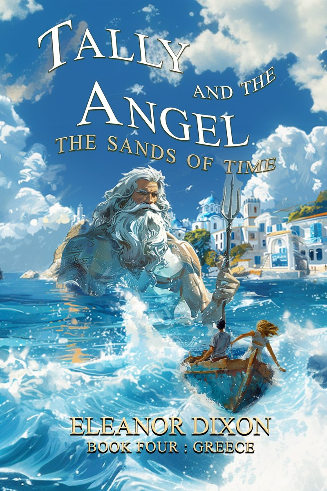

The books
The Murmuring Mirror
When Lauren and her friends return to Amberwood Hall for the summer term, a strange mirror found in the old cellar begins to affect the dancers in eerie ways. Whispers echo from within. Reflections do not quite match.
Book 5 in the Amberwood Hall Ballet School series. Perfect for readers 9 and up: ballet dreams, ghostly friendship and a hint of pre-teen romance.

Tally and the Angel: The Sands of Time
Book four of the middle grade series where Tally and her angel Jophiel, who lives in her mother's pendant, battle mythical creatures in a new place each time. This one is set in Greece.
Inspired by my own travels and my years running a ballet school in Athens.
Eleanor
I went to ballet boarding school, which is where The Graceful Ghost comes from. After I left I danced around Europe, then opened my own ballet school in Athens, Greece.
Now I live in rural England with my husband and our pets. My children's books are full of fantasy and magic, sometimes sprinkled with ballet and sometimes with worldwide travel.
On the shelf at The Book Dragon
The Book Dragon in Stockton-on-Tees only stocks self-published and independent authors. It carries Tally and the Angel, and wrote up the series with a book review and an interview.
Find me on Instagram and at eleanordixon.com.